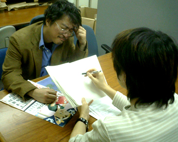
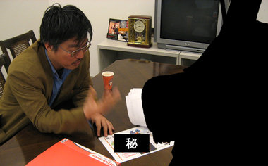

はいはいはいはいはい（汗;)
お疲れさまです。きむＰです。
あー、なんだかんだいって、開発はいまラストスパート一歩前。
あくせく度１２０％！？
そんなさなか、ＰＲ大臣の中村さんから
お怒りの言葉をいただきました。
ご、ごめんなさーい。
ＰＲ大臣「もっと御意見ボックスのお便りに答えてくださいよ！きむＰ！」
きむＰ「は、はい！了解しました！」
と、プリントアウトされた、大量のお便りが・・目の前に。
というわけで、新規カテゴリー登場で！
です。右側の「カテゴリ」内「～お便りのコーナー～」から、どぞ。
・・・・・
・・・・・（１時間後）
・・・・・あ、あれ？あれ？あれれ？
ひゃ～、だめだ～ たくさんのお便りがきてるのに
なかなか答えられない。（体力的に・・）
今週はここらで、ひとまずサンクス。ご勘弁。
みなさん、ゲームの完成を楽しみにしていてくださいねー♪
ＰＲ大臣「うーむ、では 目標をさだめます。来週月曜から、
１日１通、がんばっちゃってください！」
きむＰ「は、、はい。かしこまりました！」
こんにちは。ＰＲ大臣・中村です。
『王様物語』のデザイナーといえば、皆葉英夫さんと倉島一幸さんですね。
今回は、このお２人ときむＰの打ち合わせ現場に突撃しました。
そう。打ち合わせ現場に突撃シリーズ 第３弾です！
いつまで続くか分からないですが、いつのまにかシリーズ化してました。
----------------------
---今日は何のミーティングですか？
きむＰ「今後、『王様物語』が、雑誌やWEBとかに載ったり、
ポスターつくったりするじゃない。
その素材の話ね。いつまでにどんな絵を描いてもらうか。
そのへんをダンドリまっせ～。へっへっへ」
---皆葉さんときむＰは、組むのは初めてですか？
皆葉「昔会社がいっしょで、その頃からの長い付き合いですが、
仕事として組むのは、初めてですね…」
---きむＰの初対面の印象はどうでした？
皆葉「木村さんが会社宛に送ってきたFAXが第一印象でしたね。
ナイロビから送ってきた、“アフリカはてごわいです”っていうFAX」
きむＰ「FAXかい！」
---今回組んでみてどうですか？
皆葉「木村さんはマメな人ですね。
こんなに頻繁に電話かかってきたことないので嬉しい悲鳴です（笑）。
でも、この３人での打ち合わせは楽しいですし、
このプロジェクトは、参加していて面白いですよ」
倉島「この３人は付き合いは長いけど、３人が同じプロジェクトで
組むのは初めてだよね。ついに、って感じで嬉しいよね」
きむＰ「そうね、“ついに感”があるよね～」
---きむＰからの皆葉さんの印象は？
きむＰ「当時、会社にマ●●のものすごく大きな絵が飾ってあって、
これ描いた人すごいな～って思って、うっとりと眺めてたの。
それを描いたのが皆葉さんだったんだよね」
皆葉「手描きだったんですよ、あれ」
きむＰ「あと、皆葉さんに参加してもらって助かっているのが……、
たとえば、『王様物語』を開発していくなかでも、絵的なアドバイスが
欲しいっていうことがよくあるんだけど。
皆葉さんに聞くと、的確なアドバイスがすぐに来る」
---倉島さんはどうですか？
きむＰ「アイデアを出してもらうことが多いかな。
でも、来たアイデアが、本人もよく分かってないものだったりしてさ」
倉島「いやいや、木村さんからの指示が超シンプルで、
“ちょっとアイデア出して”みたいなのだからじゃないですか！
ムチャぶりもいいとこですよ！」
---まあまあ、落ち着いてください。
皆葉「そういえばこの３人といえば、15年くらい前
オーストラリアに行ったとき、みんなでバンジージャンプやったよね」
倉島「そうそう、２人は飛んだのに、木村さんだけ飛べなくて、
“チキンＴシャツ”をもらってたよね。あのＴシャツまだ持ってるの？」
きむＰ「その話はするんじゃねえ！」（倉島氏につかみかかるきむＰ）
皆葉「私のために、ケンカはやめてっ！」
（といいつつ、コップを掴み、二人におどりかかる皆葉氏）
----------------------
さて、最後はプチ惨事となってしまいましたが、
今後、このお２人から、たのしい絵がどんどん上がってくると思います。
皆さん、お楽しみに！
それでは、取っ組み合う倉島氏＆きむＰと、それを止めようとする（？）
皆葉氏の、微笑ましい写真をご堪能下さい。

こんにちは！
久々登場の和田です。
いつもならここで長ったらしい前置きをするんですが、今日は会社で
シラフで書いているのでそんなことにはなっていませんよ（ニコッ！
本当はいつものようにキムＰが書いてくれる予定だったのですが、
もう半端なくてんぱってて、やばそうなんで私が代打で書いてます。
開発は今がまさにクライマックスという状況です。
いろんな要素が出揃って、それをがっちゃんこして、がっちゃんこしてみたら
あーーー！動かないーーー！とかあーーーこれが足りないーーー！とか
あーーーここ面白くないーーーとか（笑
最後のはネタですが、そんな事が毎日起こっているのでもう大変です。
実はこんな時、ディレクターは地獄のような状況でも
かえって楽しかったりするんですよね。
それは一番もの作りに集中する時であり、てごたえをガンガン感じるので
アウトプットとインプットがとても速いサイクルで起こって
なかばトランス状態におちるというか、ハイになるんですね。気持ちよい！
でも今回はキムＰの名のとおり、プロデューサーなので、いよいよ再開しそうな
宣伝の仕込みとかパッケージ作ったりとか、
純粋なゲーム開発とは違う部分の仕事が
波のように押し寄せて来る時期だったりします。
しかし、キムＰは現場からなかなか目を離せません。
現場でもプロデューサーの果たす役割が重要で、
仕事が山のように沸いて出てくるわけです。
というわけでもう大変。祭りダーーーー！って感じです（笑
私も笑ってる場合じゃなかったりするんですが、ゆるく笑うことで
なんとか自分をごまかしてます。
多分こんな愛と情熱が詰まったゲームだから
きっと良いものになるに違いない！
っとか思いながら、２末ＲＯＭなるものをプレイしてたら、、、（汗
いやあ、まだまだ予断を許しませんね。
もっともっとがんばっていかないとできあがりません。
ただ、動いてる画面はものすごく進化してます。いい。
ヘンナノも選考しないといけないし、続々とおもしろ要素も増えてきてます。
早く公開できると良いなぁ（とぉい目
ではでは、私はこの辺でお付き合いがあるのでお酒飲みにいってきます。
え？いやいや、仕事ですよ～（笑
今週の画像は、ボードに訳の分からない絵を描き出すキムＰ。
遊んでいるわけではなく、精神集中のための儀式です。

---大変、大変ですよ！
きむＰ「なになに？」
---ハウザーのご意見ボックスにたくさんのお手紙が入っていました！
いくつか選んで持ってきました。今日こそは、質問に答えてもらいますよ。
きむＰ「……（笑顔）」
---おっと、前回のＭ氏から続いてますね。
きむＰ「ご意見ボックスのお手紙、もちろん全部読んでいるよ。
鋭いお手紙あり、暖かいお手紙あり。
ほんとうに開発の励みになっています！（ビシッ）
じゃあ、ヒヤウィゴー！何でも聞いてよ」
---それではまず、ペンネーム“愛の申し子”さん。
「王様物語って何て略すんですか？」
とのことですが。
きむＰ「おおもの。…うーん、語呂悪いね。
じゃあ、良い略しかたも募集中ということで。」
---そして、ペンネーム“ニャー”さんの質問です
「ヘンナノ大募集って、どうなったんでしょうか。ちょっと気になります…」
きむＰ「ごめんなさい。あまりにたくさん応募してもらったので、
銀賞の100名を選ぶのも大変で。
それに力作ばかりだから選考するのに悩みまくりで。
なんらかの経過を、春の半ばくらいかな？報告するので、少々お待ち下さい」
---そして、ペンネーム“おうさま”さんからの応援。
「出たら絶対買おうと、公式ページを発売日が決まってないかこまめに見てます。
頑張って早く出して下さい。でも手は抜かないで下さい」
きむＰ「頑張って早く出したい気持ちもあるけど、
けっして手は抜きたくないという気持ちもあり。
でも、ゲームってなかなかできないものなの。ボクちん涙が出ちゃう・・」
---ペンネーム“コマチネ27歳”さん。
「奥が深そうで楽しそうだとは思うのですが、操作が難しいのでは？
アクションが苦手だから戦闘で敵に負けちゃうかも？と、ちょっと不安です」
きむＰ「簡単操作を目指して調整しています。
ぜったい難しいゲームにはしたくないじょ。
自分自身、難しい操作のゲームはすぐ投げ出しちゃうので
ライトゲーマーの目線でテストプレイしてます。ＬＯＶＥ！」
---さいごに、“Sein”さん。
「とてもとても、楽しみにしています。
早く情報公開が始まらないかと、HPが開く前からずっとわくわく中なのです。
開発は大変だと思いますが（ブログの中でもなんだか苦労してる感が
ちらりちらり・・・です）是非是非、良い物を作ってくださいませ。
絶対、予約して買っちゃいます～。お体には気をつけつつ、
がんばってくださいませ。」
きむＰ「……（感動でわなわなと震えつつ）こ、こんなお手紙、
中学時代のバレンタインデー以来ですっ！
熱いものをを感じますね！ ＬＯＶＥ×２！」
今週の画像は、質問に答えるきむＰです。
う～ん、悩んでますね。

こんにちは。ＰＲ大臣・中村です。
今週もみなさん、お便りありがとうございます！
今回のブログもなんとか、お便りにお答えしたいとおもいます（汗;)
さてさて、コーナーで映像みせてくれ！
の次に一番多かった質問が・・
これです。
オ ン ガ ク。
気になりますよね、音楽担当者。
はい。今回は王様物語の音楽の話です。
実はこれ、自分も気になったので
ランチタイムにキムＰにきいてみました。
すると、きむＰいわく
「Ｍ氏だよ」との一言。
（イニシャルなんですか！？だ・・、誰！？）
そして、２，３日前
きむＰと、『王様物語』ＢＧＭ担当のＭ氏が打ち合わせると聞き、
ミーティングスペースに張り込むこと。10分。
（あ！二人が来た！）
----------------------
木村「なにしてんの」
---今日は、みんなが気になっている音楽の話を聞かせてもらいます。ブログにも書いちゃいますよ！
この人がＭ氏ですね？いいですよね！？インタビューしていいですね！？
Ｍ氏「・・・・・・」（笑顔）
---おっと、ＯＫ（？）ですね。では、『王様物語』に参加することになったきっかけからお願いします。
Ｍ氏「・・・・・・」
木村「Ｍ氏とは前にも仕事したことがあるんだけど。そのときのＢＧＭがすばらしかったから、今回も参加してもらったんだよね」
Ｍ氏「・・・・・・」（笑顔）
木村「あのときは、ホールを借り切って生音を録ったり。あれは凄かったなぁ」
---いつものとおり、また、もめたんですか？
Ｍ氏「・・・・・・」（笑顔）
---もめたんですね。
木村「うーん、そうね・・・、もめた」
---なるほど、その縁で、と…。曲作りはどのように進んでいくのでしょう？
木村「まず、つくって欲しい曲リストと、簡単な指示をＭ氏に渡す」
---ああ、あれですね、１曲につきたった20文字くらいのリスト。この前こっそり机の上にあるのをみました。
木村「微妙なバランスじゃない。指示を出しすぎても、Ｍ氏が作りづらいだろうし。何も指示がないと、何も伝わらないし。とりあえず、いいたいことは全部書きますが。」
Ｍ氏「・・・・・・」（笑顔）
木村「前に組んだときにＭ氏の力は分かってるから、安心してるけどねぇ」
---今の時点でも話せるおもしろエピソードはありますか？
木村「色々楽器をリクエストしてますね、たとえば・・」
Ｍ氏「茶碗・・」
---『王様物語』の音楽はどのような方向性ですか？
Ｍ氏「迷曲アルバム」
---音楽はどれくらい進んでいますか？
木村「もう譜面が完成した曲もあるし、イメージを固める段階のものも。でも順調かな」
Ｍ氏「・・・・・・」（笑顔）
---年齢はおいくつですか？
Ｍ氏「35」
---休日の過ごし方は？
Ｍ氏「ピアノ」
-----なんといいますか、きむＰの仕事するあいては、タタミの似合いそうな人ばかりですね。
Ｍ氏「・・・・・・」（笑顔）
木村「・・・・・・」（笑顔）
--------------------
・・と、こんな風に、口数も少なく静かにインタビューは終わりをつげましたが、
インタビュ後にＭ氏がかいたメモをみつけました。
「（きむＰから）来たコトバに、オンガクで返す。これが私の仕事」
黙々とした中に、男らしさのある、なんとも実直なお言葉。
頼もしいかぎりです。

↓打ち合わせ風景の写真
“Ｍ氏”は、シルエット（黒べた？）でお願いしますとのこと。
その姿は…いずれ、明らかになるずです。ですよね？＞きむＰ


 クリエイターズBLOG トップ
クリエイターズBLOG トップ